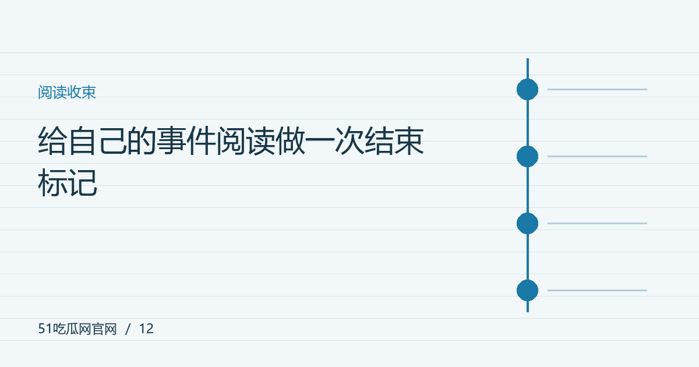

给自己的事件阅读做一次结束标记
不是所有话题都需要持续刷新。写清当前结论、未决问题与再次查看的条件，让追踪保持有序。

先整理当前已经知道什么
完成一次阅读后，把确定信息、他人解释和未知问题分开。结论可以很短，但应与材料范围一致，不因为投入时间多就要求自己必须选边。对于没有新证据的争议，重复阅读相同观点未必增加理解，适时停止也是合理选择。
给未决问题设置明确触发条件
例如等待正式公告、完整采访或公开文件，而不是看到任何新热评就重新进入话题。触发条件越具体，越能避免把普通转述当成进展。记录可能出现新材料的公开入口即可，不必持续监控人物私人活动或无关账号。
保存来源而不是保存所有情绪
保留关键材料、简短摘要和自己的判断边界，通常比截取大量争论更方便复看。对已经证实不准确的内容，标注原因或移出常用清单。阅读记录应该帮助未来的自己快速恢复语境，而不是让过去的情绪在每次打开时重新启动。
允许以后不再跟进
有些问题与自己的工作和生活没有持续关系，了解主要事实后可以结束。后续若出现真正影响结论的材料，再按需要更新。把信息消费变成自主安排，而不是被话题热度牵引，能够保留兴趣，也让每次再次阅读有更清楚的目的。回看“给自己的事件阅读做一次结束标记”这个问题时，可以保留自己的疑问与材料清单，先完成能够验证的部分，再处理需要等待的信息。对阅读方法的建议也应结合实际情况使用，不必把一种顺序当成所有场景的唯一答案。
编辑演示：本文用于展示专题阅读；虚构情境不构成真实人物或事件报道。
下一篇：事件时间线，先把四种时间分清楚 →